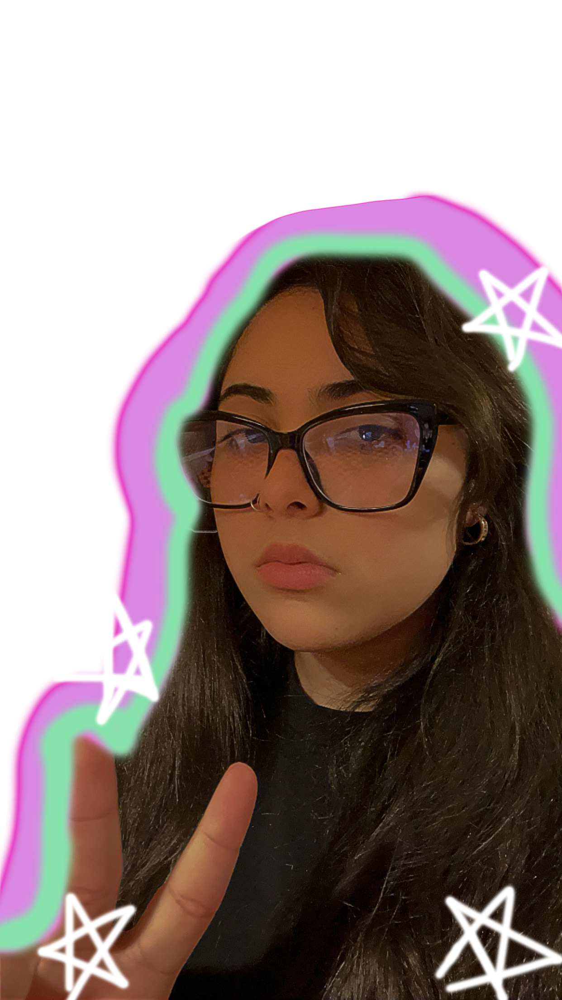

The Following sources Used for this Web Site
- Dribbble: Choosing typography for web design by Renee Fleck
- Dribbble: Choosing colors for web design by Renee Fleck
- Dribbble: 11 Principles of Design by Renee Fleck
Web Site Designer
Hi! My name is Angelie Santiago and I am majoring in Graphic Design and I am pursuing my BA in arts. I am a Senior at North Central College, Naperville, Illinois. I am also first year studnet and also a transfer student from the Heartland Community College from Normal, Illinois with my Assosiate in Arts, I am interested in doing illustrations, lots of photoshoping and doodling with Procreate! Currently learning UI/UX design and Animation to enhance my skills!
I enjoy spending my free time watching anime and old movies. I also have a huge love for video games. I spend a lot of time online with friends as well. I love art and design because it allows me to express my creativity and bring ideas to life. I enjoying different mediums like painting, drawing and even music making. I love exploring new styles and pushing the boundaries of my artistic abilities.Check out my portfolio on Behance where you can see a bit of my work!
Project Description:
Design and develop a visually pleasing, interactive website with multiple HTML pages, navigation connecting all the pages, featuring a cohesive color scheme, a clear visual hierarchy, a balanced layout, exciting visuals, and text. The goal is to learn how to code/develop an interactive website by applying design principles.
Work Cited
Arruda, Ryan. “5 Sneaky Typography Errors to Avoid.” Dribbble, dribbble.com/stories/2019/08/14/5-sneaky-typography-errors-to-avoid.
“Bornfight Studio®.” Dribbble, dribbble.com/bornfight_studio.
“Courtside:The Dribbble Blog.” Stories-the Design Blog by Dribbble, 10 Oct. 2024, dribbble.com/stories.
“Financial Infrastructure to Grow Your Revenue.” Stripe, stripe.com/.
Fleck , Renee. “8 Expressive Free Font Combos for Your next Design-Curated by Davide Baratta.” Dribbble, 10AD, dribbble.com/stories/2020/06/10/free-font-combinations.
Fleck, Renee. “Choosing Typography for Web Design: 5 Things You Need to Consider.” Dribbble, 17 Aug. 2020, dribbble.com/stories/2020/08/17/choosing-typography-for-web-design.
Fleck, Renee. “Choosing Colors for Web Design: A Practical Ui Color Application Guide.” Dribbble, 19 Dec. 2018 dribbble.com/stories/2018/12/19/choosing-colors-for-web-design-a-practical-ui-color-application-guide
Fleck, Renee. “11 Principles of Design (& How to Use Them)." Dribble, 10 Dec. 2021, https://dribbble.com/resources/principles-of-design
Ito, Ayaka B. “Jasmine Display:Delicate, Modern Serif Typeface with Spiky Inscriptional Qualities.” Ayaka B. Ito, ayakaito.com/.
“Process.” Stories-the Design Blog by Dribbble, dribbble.com/stories/categories/process.